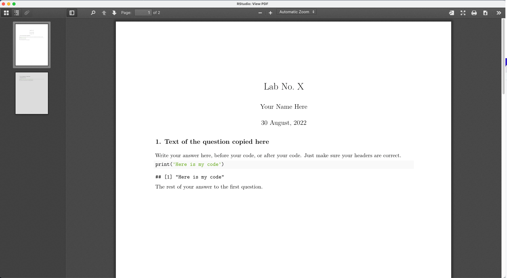

As mentioned in the syllabus, you will do all of your work in this class with the open source programming language R. You will use RStudio/Posit as the main program to access R. Think of R as an engine and RStudio/Posit as a car dashboard—–R handles all the calculations and the actual statistics, while RStudio provides a nice interface for running R code.
RStudio is in the process of rebranding as Posit. You’ll see both along the way.
Hopefully you’re well-versed in dealing with these things, but if you’re lost, here’s how you install the required software for the course.
Install R
I have created a video walkthrough for installing R for another course, but it is useful here. You can see it here ]
First you need to install R itself (the engine).
Go to the CRAN (Collective R Archive Network) website: https://cran.r-project.org/
Click on “Download R for XXX”, where XXX is either Mac or Windows:

If you use macOS, scroll down to the first .pkg file in the list of files (in this picture, it’s R-4.0.0.pkg; as of Summer 2022 now, the current version is also 4.2.1 so use the most recent one) and download it.

If you use Windows, click “base” (or click on the bolded “install R for the first time” link) and download it.

Double click on the downloaded file (check your Downloads folder). Click yes through all the prompts to install like any other program.
If you use macOS, download and install XQuartz. You do not need to do this on Windows.
Install RStudio/Posit
Next, you need to install the most recent version of RStudio, the nicer graphical user interface (GUI) for R (the dashboard). Once R and RStudio/Posit are both installed, you can ignore R and only use RStudio. RStudio will use R automatically and you won’t ever have to interact with it directly.
- Go to the free download location on RStudio’s website: https://www.rstudio.com/products/rstudio/download/#download
- The website should automatically detect your operating system (macOS or Windows) and show a big download button for it:

If not, scroll down a little to the large table and choose the version of RStudio that matches your operating system.

- Double click on the downloaded file (again, check your
Downloads folder). Click yes through all the prompts to install like any other program.
Double click on RStudio to run it (check your applications folder or start menu).
Install tidyverse
R packages are easy to install with RStudio. Select the packages panel, click on “Install,” type the name of the package you want to install, and press enter.

This can sometimes be tedious when you’re installing lots of packages, though. The tidyverse, for instance, consists of dozens of packages (including the ever-present ggplot2) that all work together. Rather than install each individually, you can install a single magical package and get them all at the same time.
Go to the packages panel in RStudio, click on “Install,” type “tidyverse”, and press enter. You’ll see a bunch of output in the RStudio console as all the tidyverse packages are installed.

Notice also that RStudio will generate a line of code for you and run it: install.packages("tidyverse"). You can also just paste and run this instead of using the packages panel. Hopefully you’ve experienced installing packages before now; if not, consider this a crash course!
Install tinytex
When you knit to PDF, R uses a special scientific typesetting program named LaTeX.
LaTeX is neat and makes pretty documents, but it’s a huge program—the macOS version, for instance, is nearly 4 GB. To make life easier, there’s an R package named tinytex that installs a minimal LaTeX program and that automatically deals with differences between macOS and Windows.
Here’s how to install tinytex so you can knit to pretty PDFs:
- Use the Packages in panel in RStudio to install tinytex like you did above with tidyverse. Alternatively, run
install.packages("tinytex") in the console.
- Run
tinytex::install_tinytex() in the console.
- Wait for a bit while
R downloads and installs everything you need.
- The end! You should now be able to knit to PDF.
Find the course assignment template (for SSC442, see the Assignments page), right-click to download it (don’t just click on it - that won’t work), open it in Rstudio, and without changing anything, click the “knit” button to test out your install. Your system should open a PDF that looks like something like this:

See the Markdown and R Markdown sidebars for instructions on using the template.